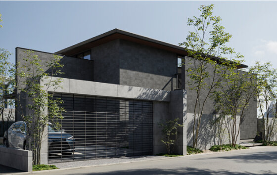
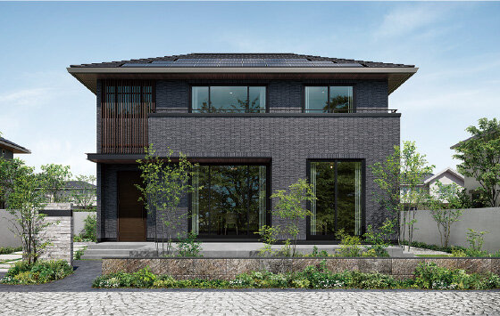
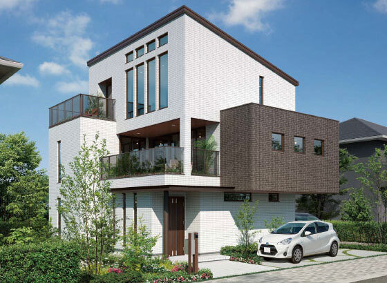
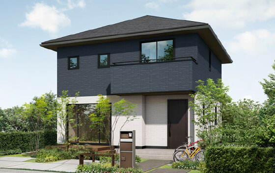
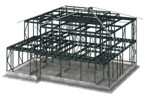
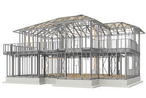
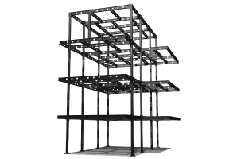
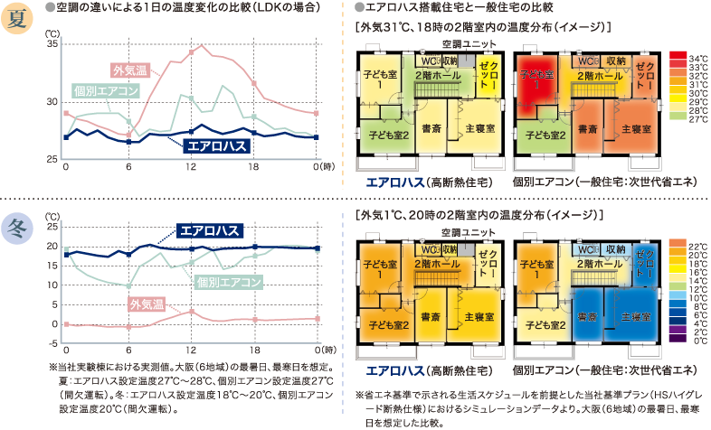
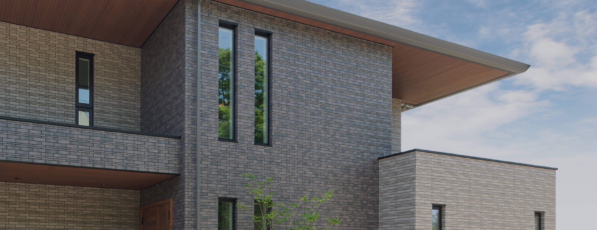
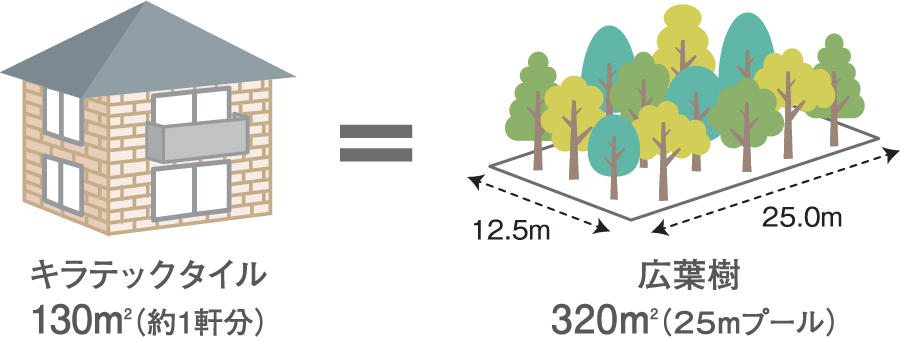

① 会社・基本データ
パナソニックホームズは1963年創業、旧社名「パナホーム」から2018年4月に「パナソニック ホームズ」へ改称した鉄骨専業のハウスメーカー。2020年1月にパナソニック・トヨタ自動車・三井物産が共同出資する「プライム ライフ テクノロジーズ（PLT）」の完全子会社となり、現在はPLTグループの中核メーカーとして鉄骨・多層階・スマートホーム領域を担当している。
| 項目 | 内容 |
|---|---|
| 会社名 | パナソニック ホームズ株式会社（Panasonic Homes Co., Ltd.） |
| 旧社名 | パナホーム株式会社（2018年4月「パナソニック ホームズ」へ変更） |
| 設立 | 1963年7月1日（ナショナル住宅建材として創業） |
| 本社 | 大阪府豊中市新千里西町1丁目1番4号 |
| 代表者 | 代表取締役社長 藤井 孝（2024年4月1日就任） |
| 資本金 | 283億7,592万円 |
| 親会社 | プライム ライフ テクノロジーズ（PLT）の完全子会社 |
| 上場状況 | 2017年9月27日に上場廃止（完全子会社化） |
| 売上高（単体） | 約3,720億円（2025年3月期） |
| 営業利益（単体） | 約127億円（2025年3月期、前期比+18.5%） |
| 中期計画 | 2025年度売上4,207億円／2030年度5,000億円目標 |
| 従業員数（連結） | 約5,375名（2025年3月末時点） |
| 年間新築戸建着工数 | 約3,800戸前後（2023年度3,796戸） |
| 対応エリア | 沖縄県・一部離島を除くほぼ全国 |
| 主な工法 | HS構法（制震鉄骨軸組）／F構法（大型パネル）／NS構法（重量鉄骨ラーメン） |
パナソニックグループ内の位置づけ
2020年1月7日に、パナソニック・トヨタ自動車・三井物産の3社出資による共同持株会社「プライム ライフ テクノロジーズ（PLT）」が発足。傘下主要5社はパナソニック ホームズ／トヨタホーム／ミサワホーム／パナソニック建設エンジニアリング／松村組。パナソニックホームズはPLTグループの中核メーカーとして、鉄骨・多層階・スマートホーム領域を担当している。
一言で言うと？
「鉄骨と制震、そしてパナソニックの空気・エネルギー・スマートホーム技術で建てる、都市型・多層階・長寿命に強いハウスメーカー」。
耐震等級3＋制震構造＋最長35年の「地震あんしん保証」、光触媒タイル「キラテック」、全館空調「エアロハス」がブランドの3本柱。
② 商品ラインナップと坪単価
2026年現在、全体平均坪単価は約113〜115万円／坪。中央値は90〜120万円／坪で、30坪本体の中心値は約3,400〜3,900万円。大手HMでは積水ハウス・ヘーベルハウスと同水準、ダイワハウス・セキスイハイムと同等のレンジに位置する。

注文住宅（平屋・2階建）
| 商品名 | 構法 | 坪単価目安（2026年） | 主な特徴 |
|---|---|---|---|
| カサート プレミアム | HS構法 | 110〜140万円 | フラッグシップ。彫りの深い外観・本物素材・高天井大空間 |
| カサート | HS構法 | 95〜130万円 | 主力モデル。15cm単位の自由設計・耐震/制震を両立 |
| カサート アーバン | HS構法 | 100〜135万円 | HomeX標準搭載。都市型2〜3階建 |
| フォルティナ X/S | F構法 | 85〜110万円 | コスパ重視のF構法モデル。XはエアロハスVerオプション可 |
| フォルティナ セレクトプレミアム | F構法 | 90〜115万円 | プロ厳選プランのカスタマイズ型規格住宅 |
| エル・ソラーナ | F構法 | 80〜105万円 | ZEH/環境配慮特化。大型パネル構造で工期短縮 |
| 平屋の住まい | HS/F構法 | 90〜120万円 | 1.5階/スキップフロア提案に強い平屋商品 |

多層階住宅（3〜9階建）
| 商品名 | 構法 | 坪単価目安 | 主な特徴 |
|---|---|---|---|
| ビューノ | NS構法 | 100〜140万円 | 多層階住宅ブランド。最大9階建対応。高断熱NEWビューノ（2024年9月発売） |
| ビューノ3E/S | NS構法 | 95〜130万円 | 3階建専用。敷地境界30cmから建築可能な無足場工法対応 |
| ビューノ5（空の邸宅） | NS構法 | 130〜170万円 | 上層自宅＋下層賃貸の「空の邸宅」コンセプト |

規格住宅・WEB限定
| 商品名 | 坪単価目安 | 主な特徴 |
|---|---|---|
| ヴェッセ（V'esse） | 80〜100万円／本体2,500万円台〜 | オンライン価格シミュレーション対応。規格型で意思決定を短縮 |

過去に展開していた商品（現在は販売終了）
- artim（アーティム）：木造ラインナップ。現在はHPも閉鎖され、パナソニックホームズは鉄骨専業HMに回帰
- 「i」シリーズ / NU-CPLUS：カサート・フォルティナへ整理統合済
ARCHIST視点：2020年代前半に「artim」で木造に挑戦したが撤退。現在は鉄骨とスマートホームに集中する戦略。木造志向の方には合わない。
③ 構造・耐震性能
パナソニックホームズは鉄骨専業で、商品に応じて次の3構法を使い分ける。
HS構法（制震鉄骨軸組構造）— カサート系
| 項目 | 詳細 |
|---|---|
| 構造 | 軽量鉄骨の軸組＋耐力壁「アタックフレーム」 |
| 制震装置 | 「アタックダンパー」（座屈拘束＋低降伏点鋼）を標準装備 |
| 間取り | 15cm単位で柱位置を調整可能。自由度が鉄骨メーカーでトップクラス |
| 採用商品 | カサート／カサート プレミアム／カサート アーバン／平屋 |
アタックダンパーは高層ビルに使われる「座屈拘束ブレース」を住宅用に小型化したもの。引張・圧縮の両方で変形エネルギーを熱に変換し、繰り返し地震で性能が劣化しにくい。

F構法（大型パネル構造）— フォルティナ／エルソラーナ
| 項目 | 詳細 |
|---|---|
| 構造 | 工場で製造した大型壁パネル＋鉄骨フレーム |
| 工場生産比率 | 約80% |
| 上棟 | 大半が1日で上棟完了（現場依存を最小化） |
| コスト | HS構法より約10〜20万円／坪安い |
| 制約 | 耐力壁の位置が決まっているため間取り自由度はHSより低い |

NS構法（重量鉄骨ラーメン構造）— ビューノ
| 項目 | 詳細 |
|---|---|
| 構造 | 重量鉄骨の柱梁ラーメン構造（剛接合） |
| 対応階数 | 3〜9階建 |
| 特殊工法 | 無足場工法で境界から30cmで建築可 |
| 大開口 | 耐力壁不要のため、窓の面積を最大化できる |

耐震・制震データ
- 全商品 耐震等級3（最高等級）を標準取得
- 東日本大震災の築館波の1.2倍相当の変形試験を180回繰り返してもほとんど性能低下なし（公式HS構法ページ）
- 震度7の地震200回分以上に耐えた社内データを公表（座屈拘束ブレース）
基礎
- 標準はベタ基礎＋2重配筋
- 地盤改良は必要に応じて柱状改良・鋼管杭を選択
④ 断熱性能
UA値（公表データ）
| 仕様 | UA値 | 断熱等級 |
|---|---|---|
| カサート（標準仕様） | 0.60 W/m²K前後 | 等級5（ZEH基準クリア） |
| カサート（断熱強化仕様） | 0.46 W/m²K前後 | 等級6 |
| ビューノ（NEWビューノ 2024-） | 0.277（従来0.454から約39%向上） | 等級6／東京ゼロエミ住宅水準A相当 |
| エルソラーナ（ZEH標準） | 0.60 | 等級5 |
| （参考）一条工務店 i-smart | 0.25 | 等級7 |
| （参考）国の省エネ基準 | 0.87 | 等級4 |
断熱仕様
| 部位 | 仕様 |
|---|---|
| 外壁 | 外張り断熱＋充填断熱（ダブル断熱仕様）／グラスウール・硬質ウレタン |
| 天井（小屋裏） | 高性能グラスウール200mm前後 |
| 床下 | 押出発泡ポリスチレン |
| 窓 | 樹脂＋アルミ複合サッシ（一部オプションで全樹脂）／Low-Eペアガラス標準 |
| 玄関ドア | 高断熱仕様（D2相当） |
鉄骨メーカーとしての断熱の立ち位置
| HM | UA値（代表） | 備考 |
|---|---|---|
| 一条工務店（木造） | 0.25 | 等級7 |
| 住友林業（木造） | 0.46 | 等級5 |
| パナソニックホームズ（鉄骨） | 0.46〜0.60 | 等級5〜6 |
| 積水ハウス（鉄骨ダイン） | 0.55〜0.60 | 等級5 |
| ダイワハウス（xevoΣ） | 0.55〜0.60 | 等級5 |
| ヘーベルハウス（鉄骨ALC） | 0.55〜0.60 | 等級5 |
ARCHIST視点：パナソニックホームズは鉄骨HMの中では断熱性能上位。ただし「断熱極限追求」なら一条工務店（木造）に軍配。鉄骨の熱橋（柱・梁の熱の逃げ）を外張り断熱で補う構造は理解しておきたい。
⑤ 気密性能
C値（相当隙間面積）
| 項目 | 数値 |
|---|---|
| 公称C値 | 非公表（全棟測定も行っていない） |
| 実測報告値 | 施主ブログ実測で1.0〜2.0 cm²/m²のケース多い |
| 社内目標値 | 公表されていない |
鉄骨メーカー共通の弱点
- 鉄骨は木造に比べ部材接合部が多く、気密処理が難しい
- 「エアロハス」全館空調＋24時間換気で空気品質を担保する設計思想のため、C値を追求しないポリシー
- 一条工務店（0.59 cm²/m²全棟平均）やアイ工務店（0.28）と比較すると気密性能では明確に劣る
他社気密比較
| HM | C値公表 | 全棟測定 |
|---|---|---|
| 一条工務店 | 0.59（全棟平均） | 〇 |
| アイ工務店 | 0.28 | 〇 |
| パナソニックホームズ | 非公表 | × |
| 積水ハウス | 非公表 | × |
| ヘーベルハウス | 非公表 | × |
ARCHIST視点：「C値の数字で家を選ぶ」なら一条・アイ工務店の方が向く。パナソニックホームズは「全館空調＋HEPAで空気を制御する」設計思想なので、気密を極限追求する必要がない、という理屈。
⑥ 換気・空調（エアロハス全館空調）
エアロハスはパナソニックホームズの最大の差別化装備。

| 項目 | スペック |
|---|---|
| 方式 | 第一種換気＋冷暖房一体型全館空調 |
| 熱交換 | 全熱交換型（湿度・温度の両方を回収） |
| HEPAフィルター | 粒径0.3μmの微粒子を99.97%捕集（JIS Z 8122準拠） |
| PM2.5対策 | モニター邸でLDK96%、寝室97%の浄化効果を実証 |
| VOC対応 | ホルムアルデヒド等5物質を国基準の1/2以下に抑制 |
| 加湿機能 | 標準では加湿機能なし（オプション・市販加湿器で補完） |
| 導入コスト | オプションで+150〜200万円 |
| 電気代 | 冬月1.0〜1.5万円／夏月1.5〜2.0万円（施主実測） |
エアロハスのメリット／デメリット
メリット
- 家中どこでも温度差が±1〜2℃内
- ヒートショック対策として有効
- HEPAで花粉・PM2.5ほぼ全カット
- 床下から外気を取り込む2段階浄化
デメリット
- +150〜200万円の初期費用
- 冬の室内湿度が30%台まで下がる
- 故障で家全体の空調が停止
- 10〜15年で部品交換20〜40万円
- 24時間運転で月1〜2万円の電気代
一般換気システム（エアロハス非採用時）
- 24時間換気は建築基準法通り第一種/第三種から選択
- 小屋裏の換気扇でロスの少ない計画換気
⑦ デザイン・外壁（キラテックタイル）

キラテックタイル（光触媒タイル）— ブランドの象徴
| 項目 | 詳細 |
|---|---|
| 技術 | 光触媒（酸化チタン）を焼き付けした磁器質タイル |
| セルフクリーニング | 紫外線で汚れを分解→雨で洗い流す |
| 設計耐用年数 | 60年相当（紫外線試験クリア） |
| 保証 | タイル自体の変色・剥離に対して30年保証（塗り替え不要） |
| カラー | KDスタックなど新デザイン含め多色展開（組み合わせ可） |
| 標準採用商品 | カサートは標準。フォルティナSはサイディングが標準・タイルはオプション |
| メンテ総コスト試算 | 60年で一般サイディング比約300〜500万円節約の試算が多い |

内装・デザインの傾向
- 設備：パナソニック製キッチン・バス・洗面台・照明が標準。メンテ部品の流通が安定
- スタイル：モダン・シンプル・都市型が得意。和風・南欧風は弱め
- 自由度：HS構法の15cm単位設計は鉄骨HMで最高クラス。ただしF構法は制約あり
デザインの弱点
- 外観は「白タイル直方体」の定番が多く、個性を出しにくいとの口コミ
- 木の質感を前面に出すのは苦手（木造HM＝住友林業・一条グランセゾン等の方が強い）
⑧ 保証・アフターサポート
35年あんしん初期保証（キラテックタイル採用時）
| 保証項目 | 初期保証期間 | 延長条件 |
|---|---|---|
| 構造耐力上主要な部分 | 35年 | 10年目以降の有料メンテで最長60年まで延長可 |
| 雨水の侵入を防止する部分 | 30年 | 同上 |
| 外壁タイル（キラテック） | 30年（変色・剥離） | 塗装メンテ不要 |
| 防蟻処理 | 10年 | 10年ごとの有料再処理で継続可 |
| 住宅設備 | 2年（一部10年延長可） | メーカー保証に準拠 |
20年あんしん保証（サイディング採用時）
| 保証項目 | 期間 |
|---|---|
| 構造耐力 | 20年 |
| 防水 | 15年 |
外壁選択で初期保証が15年差つく点は要注意。キラテックタイルなら35年／サイディングなら20年。
地震あんしん保証
| 項目 | 内容 |
|---|---|
| 保証期間 | 引渡し日から35年（20年コースは所定メンテ条件あり） |
| 対象物件 | 耐震等級3の3階建以下居住用建物。4階以上は対象外 |
| 補償内容 | 全壊 → 建て替え／大規模半壊・中規模半壊・半壊 → 補修 |
| 補償範囲 | 計測震度6.8以下の地震の揺れ（観測された阪神・東日本の被災地点の計測震度を上回る水準） |
| 上限額 | 1回の地震につき建物価格または5,000万円の低い方 |
| 年度上限 | 全国合計で10億円 |
| 条件 | パナソニックホームズへの工事依頼が前提（金銭ではなく役務提供） |
60年長期保証延長システム
- 35年経過後、10年ごとに無料点検＋有料メンテで更新
- 有料メンテを受けないと保証は打ち切りになる点は要注意
アフターサポート
- CATCHES24：24時間365日の相談窓口
- 5年ごとの定期訪問点検（2ヶ月／1年／2年／5年／10年／20年／30年）
- オーナー専用アプリで依頼履歴・部品発注が可能
⑨ 建築期間
| フェーズ | 期間目安 |
|---|---|
| 初回来場〜仮契約 | 1〜3ヶ月 |
| 仮契約〜本契約 | 2〜4ヶ月 |
| 本契約〜着工（設計・確認申請） | 2〜3ヶ月 |
| 着工〜上棟 | F構法なら1日上棟／HS構法は1〜2週 |
| 上棟〜引渡し | 3〜5ヶ月 |
| 合計（初回〜引渡し） | 9〜15ヶ月 |
| 着工〜引渡し | 4〜6ヶ月 |
工場生産比率の高さ
- F構法は壁パネルを工場で一体生産→現場組立
- 天候に左右されにくく、品質が安定
- 大工の技術差が出にくい
⑩ 客層・向き不向き
| 属性 | 傾向 |
|---|---|
| 年齢 | 30代後半〜50代（一条より高め） |
| 世帯年収 | 800〜1,200万円帯がボリュームゾーン |
| 職業 | 会社員・公務員・医師・経営者 |
| 家族構成 | 夫婦＋子ども1〜2人、または二世帯 |
| 価値観 | 安心・長寿命・スマートを重視する理性的購買層 |
| 検討HM | 積水ハウス／ダイワハウス／ヘーベルハウス／セキスイハイム／一条工務店 |
パナソニックホームズを選ぶ理由 TOP3
- キラテックタイルで外壁メンテフリー化したい
- 地震あんしん保証で震災リスクの心理的ヘッジを取りたい
- エアロハスで家中の空気品質を統一したい
多層階需要
ビューノは「土地が狭いが都市立地を諦めたくない」「下層を賃貸にして収益化したい」という都市部富裕層に支持されている。愛知県では名古屋市中区・東区・千種区などで多い。
⑪ 他社との比較表
総合比較表（鉄骨HM4社＋一条）
| 比較 | パナソニックホームズ | ダイワハウス | セキスイハイム | ヘーベルハウス | 一条工務店 |
|---|---|---|---|---|---|
| 坪単価 | 95〜130 | 90〜130 | 90〜120 | 100〜140 | 85〜105 |
| 構造 | 鉄骨（HS/F/NS） | 鉄骨（xevoΣ） | 鉄骨ユニット | 鉄骨＋ALC | 木造2×6 |
| UA値 | 0.46〜0.60 | 0.55〜0.60 | 0.55〜0.46 | 0.55〜0.60 | 0.25 |
| C値 | 非公表 | 非公表 | 2.0目安 | 非公表 | 0.59（全棟） |
| 耐震 | 等級3＋制震 | 等級3＋制震 | 等級3 | 等級3＋制震 | 等級3 |
| 外壁 | キラテック | ベルサイクス | 磁器タイル | ALCヘーベル板 | ハイドロテクト |
| 初期保証 | 35年（タイル時） | 30年 | 30年 | 30年 | 30年 |
| 全館空調 | エアロハス◎ | 快適住まい〇 | 快適エアリー◎ | なし | 床暖房◎ |
| スマート | ◎ HomeX/HEMS | 〇 | 〇 | 〇 | △ |
vs ダイワハウス
| 比較軸 | パナソニックホームズ | ダイワハウス |
|---|---|---|
| 外壁 | キラテック光触媒（セルフクリーニング） | ベルサイクス（塗装メンテ要） |
| 制震 | アタックダンパー | Dテクチュアル |
| スマートホーム | ◎（HomeX・HEMS・家電連携） | 〇 |
| 向く人 | 外壁メンテフリー＋スマート志向 | 大空間・吹抜・豪華さ重視 |
vs セキスイハイム
| 比較軸 | パナソニックホームズ | セキスイハイム |
|---|---|---|
| 工法 | HS/F/NS（現場組立中心） | ユニット工法（工場80%完成） |
| 工期 | 4〜6ヶ月 | 2〜3ヶ月（業界最速クラス） |
| 断熱 | 0.46〜0.60 | SPH 0.46／SPS 0.55 |
| 向く人 | タイル外壁・空気品質 | 工場生産の信頼性＋快適エアリー |
vs ヘーベルハウス
| 比較軸 | パナソニックホームズ | ヘーベルハウス |
|---|---|---|
| 外壁 | タイル（キラテック） | ALCヘーベル板 |
| 耐火 | 〇 | ◎（業界トップ） |
| 重厚感 | 〇 | ◎ |
| 価格 | 95〜130万 | 100〜140万 |
| 向く人 | メンテフリー・空気 | 耐火・長寿命・都市3階建 |
vs 一条工務店
| 比較軸 | パナソニックホームズ | 一条工務店 |
|---|---|---|
| 構造 | 鉄骨 | 木造2×6 |
| 断熱・気密 | △〜〇 | ◎（業界No.1） |
| 耐震保証 | ◎（地震あんしん保証） | 〇 |
| デザイン自由度 | 〇（HS構法は15cm単位） | △（一条ルール） |
| スマート | ◎ | △ |
| 向く人 | 鉄骨・地震保証・スマート | 断熱性能・全館床暖房・光熱費 |
⑫ よくある後悔・失敗事例
後悔1：坪単価が思ったより高くついた
「最初の見積もりからオプションを積んで800万円超過した」。キラテック+エアロハス+HomeX+太陽光で総額が跳ね上がる。
対策：初回見積もりから「全装備込み／標準のみ」の両パターン提示を依頼。標準のフォルティナS＋必要オプションが予算最適解。
後悔2：F構法の間取り制約
フォルティナ／エルソラーナは耐力壁の位置が決まっている。「この壁を抜きたかったが構造上NGだった」という声が多い。
対策：間取りの自由度を最優先するならHS構法のカサートを選ぶ（坪単価+10〜20万円）。
後悔3：エアロハスの乾燥
冬に室内湿度が30%前後まで低下。のど・肌・フローリングの隙間発生。
対策：加湿機能付きエアコンまたは業務用加湿器の追加。標準に加湿機能がない点はエアロハス最大の弱点。
後悔4：エアロハス故障時のリスク
機器が故障すると家全体の空調が停止（冷暖房なし）。標準機器保証は2年、延長で最長10年。10〜15年での機器交換は20〜40万円。
対策：延長保証に加入。一部の部屋には別途エアコン設置もおすすめ。
後悔5：営業担当の対応差
「契約前は親切だったのに、契約後に態度が変わった」という声が一定数ある。
対策：決定事項は必ず書面化（議事録メール）。担当交代も要請可能。
後悔6：外壁タイルの固定資産税
キラテック採用で評価額が数百万円上昇→固定資産税が年2〜3万円増。
対策：タイル×30年メンテフリーの長期メリットと比較し、総コストで判断。
後悔7：鉄骨の断熱ビハインド
「他社のショールームで一条工務店と比較し、冬の暖かさに差を感じた」。鉄骨の熱橋問題は外張り断熱でカバーするが、木造高断熱HMには及ばない。
対策：断熱を最優先するなら木造HMを選択肢に。パナソニックホームズで建てるならUA値0.46仕様への強化オプションを検討。
後悔8：木造ラインナップがない
「やっぱり木の家がよかった」と後から気づくケース。artim（木造）は販売終了済み。
対策：木の温もりを重視するなら住友林業・一条グランセゾンも比較検討する。
⑬ 顧客満足度データ
オリコン顧客満足度調査（ハウスメーカー 注文住宅）
| 年度 | 順位 | スコア | 備考 |
|---|---|---|---|
| 2024年 | 総合6位 | 76.9点 | - |
| 2025年 | 総合6位 | 77.0点 | - |
| 2026年 | 総合6位 | 77.2点 | 工法別「鉄骨造」3位 |
2026年 地域別・項目別受賞
| 地域／項目 | 順位 |
|---|---|
| 甲信越・北陸 | 2位 |
| 九州・沖縄 | 2位 |
| 鉄骨造部門 | 3位 |
| 建売住宅 総合 | 5位（74.2点） |
施主満足度の傾向
高評価ポイント
- 外壁のメンテフリー性（キラテック）
- 耐震性能
- アフターサービスの手厚さ
- エアロハスの快適性
低評価ポイント
- 坪単価の高さ
- 営業担当の当たり外れ
- 断熱性（一条比較時）
- 木造商品の不在
各種独自調査でパナソニックホームズのNPSは+5〜+15程度（業界平均0〜+10）。鉄骨HMとしてはやや上位。
⑭ 坪数別の建築総額シミュレーション
※ カサート（HS構法・標準仕様）を基準。2026年4月時点の概算。金利1.5%・35年ローン・頭金なしで試算。土地代は含まない。
| 坪数 | 本体工事費 | 付帯・諸経費（20%） | 外構費 | 建築総額目安 | 月々返済額 |
|---|---|---|---|---|---|
| 25坪 | 約2,500万円 | 約500万円 | 150〜250万円 | 約3,150〜3,250万円 | 約9.7〜10.0万円 |
| 30坪 | 約3,000万円 | 約600万円 | 200〜300万円 | 約3,800〜3,900万円 | 約11.7〜12.0万円 |
| 35坪 | 約3,500万円 | 約700万円 | 200〜350万円 | 約4,400〜4,550万円 | 約13.5〜14.0万円 |
| 40坪 | 約4,000万円 | 約800万円 | 250〜400万円 | 約5,050〜5,200万円 | 約15.5〜16.0万円 |
| 45坪 | 約4,500万円 | 約900万円 | 300〜450万円 | 約5,700〜5,850万円 | 約17.5〜18.0万円 |
オプション加算目安
| オプション | 加算額 |
|---|---|
| エアロハス追加 | +150〜200万円 |
| キラテックタイル全面採用（フォルティナS時） | +100〜200万円 |
| HomeX/HEMS | +30〜80万円 |
| 太陽光10kW＋蓄電池7kWh | +300〜400万円（年10〜20万円削減で10〜15年回収） |
| 地盤改良 | 地盤状況により50〜150万円 |
フォルティナSなら坪単価85〜110万円で約10〜20%安くなる。ビューノ等多層階は+20〜40万円／坪。
⑮ パナソニックホームズ固有の注意点
HS構法／F構法の使い分け
| 構法 | 商品 | 間取り自由度 | 坪単価差 | 選ぶべき人 |
|---|---|---|---|---|
| HS構法 | カサート系・平屋 | ◎（15cm単位） | +10〜20万円／坪 | 間取りにこだわる／二世帯／変形敷地 |
| F構法 | フォルティナ・エルソラーナ | △（耐力壁位置固定） | 基準 | コスパ重視／整形地／間取り標準でOK |
展示場で必ず質問すべきこと：「今見ているプランはHSとFどちら？壁は動かせますか？」
地域・積雪地での注意
- 北陸・東北の多雪地域ではF構法のパネル仕様が一部制限
- 寒冷地仕様はUA値0.46強化オプションが事実上の必須（追加コスト+100〜150万円）
- 沖縄・一部離島は対応外
パナソニック家電連携の実用性（客観評価）
メリット（事実）
- スマホアプリで照明・空調・給湯・太陽光を一元管理
- パナソニック製家電とのスケジュール自動連携が可能
- 「洗面所の鏡に録画視聴を映す」などカサート アーバン限定機能あり
過大評価しないポイント
- 他社製家電もオープン規格で連携可能
- ユーザーが「毎日使い倒す」ケースは限定的（初期3ヶ月で設定終了が多い）
- 10年後の規格陳腐化リスク
- 家電を全てパナソニックで揃える必要はない
ARCHIST視点：家電連携は「+α」として楽しむもの。本体性能・構造・保証で判断し、HomeXやHEMSは最後にオプション判断するのが賢明。
見えにくいコスト
| 項目 | 内容 |
|---|---|
| 外壁選択で保証15年差 | サイディングだと構造20年、タイルだと35年保証 |
| エアロハス機器交換 | 10〜15年で20〜40万円 |
| 固定資産税 | タイル・太陽光・全館空調で評価額上昇。年+2〜3万円 |
| カーテン・照明 | 本体価格に含まれない場合あり。30〜60万円 |
| 外構 | 提携業者利用で中間マージン発生。相見積もり推奨 |
値引きと契約の注意点
- 値引き相場は3〜10%（一部13%超）／30坪で100〜150万円
- 本契約前が値引き交渉のベストタイミング
- オーナー紹介制度・社員紹介制度で追加割引あり
- 「今月中なら特別価格」営業トークは常套句。焦らず他社見積もりと並行検討すべき
展示場で確認すべきチェックポイント
- 「今見ている家はHS構法？F構法？壁の可変範囲は？」
- 「キラテックタイルの実物の汚れ落ちを見せてほしい」
- 「エアロハス故障時の代替手段・保守契約料金は？」
- 「地震あんしん保証の申請条件を書面でください」
- 「紹介割引の有無と割引額を教えてほしい」
- 「HomeX・HEMSのデモを実機で操作させてほしい」
- 「30年後の外壁・屋根のメンテ総額シミュレーションを出してほしい」
⑯ まとめ
- キラテックタイルによる外壁メンテフリー化（60年相当／30年保証）
- 地震あんしん保証35年（全壊→建替／半壊→補修）
- エアロハス全館空調＋HEPAフィルターで空気品質を統一
- HS構法の15cm単位自由設計（鉄骨HMで最高クラス）
- ビューノの3〜9階建対応・無足場工法で境界30cmから建築可
- パナソニックグループの家電・太陽光・蓄電池との統合運用
- 断熱・気密は性能特化型（一条工務店）に劣る（C値非公表）
- 木造ラインナップがない（artim販売終了）
- エアロハスの乾燥・故障時リスク・電気代負担
- 外観が「白タイル直方体」で個性を出しにくい
- 営業担当の当たり外れが大きい
こんな人にオススメ
- 外壁のメンテナンスフリー化を最優先したい（キラテックタイル）
- 地震への心理的安心感を最大化したい（地震あんしん保証35年）
- 都市部・狭小地・変形地で3〜9階建を建てたい（ビューノ）
- 家中の空気品質を統一したい（エアロハス＋HEPA）
- パナソニック家電・太陽光・蓄電池との統合運用に魅力を感じる
- 総予算4,000万円以上で「30年後も色褪せない家」を求める
こんな人には向いていない可能性
- 断熱・気密を数値で限界追求したい → 一条工務店
- 木の温もり・自然素材を重視したい → 住友林業
- 予算総額3,000万円以下 → タマホーム・ローコストHM
- 全館空調の故障リスクを避けたい → 床暖房型HM（一条）
- 個性的で他と違う外観を作りたい → 住友林業・三井ホーム
ARCHIST総評
パナソニックホームズは「鉄骨×スマート×長寿命」の三拍子が揃ったHMで、建てたあと30〜60年の維持コストを下げたい層に刺さる設計思想を持つ。
ただし、パナソニック家電連携の価値は人を選ぶ。本体の構造・保証・空気制御が選択の本質であり、家電連携は+αとして楽しむのが健全。
愛知県は主要対応エリアで、名古屋・日進・豊田に展示場が充実しているため、複数展示場をはしごして担当者・プランの相性を見ることを強く推奨する。